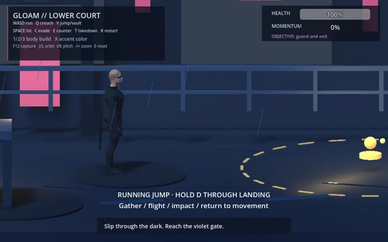
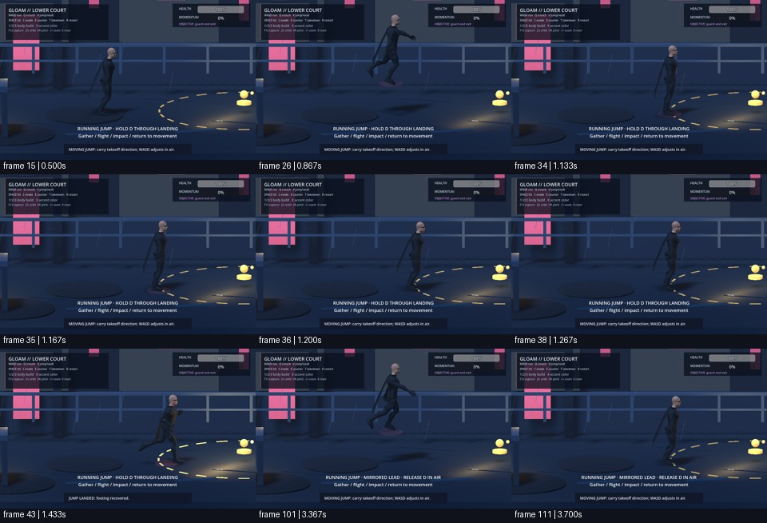
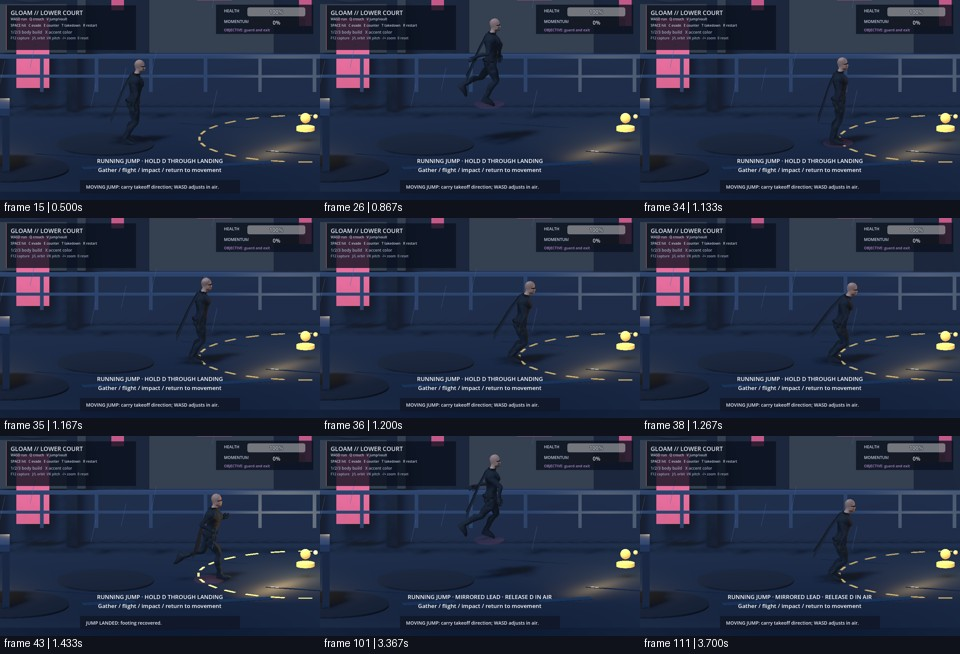

Before
8b266f001e0b


After
88855a1b6214

Do bent flight arms and a sustained knee/hip landing catch look natural in a running jump?
Fixed 30 Hz helper-driven evidence. User visual judgement is pending.
8b266f001e0b


88855a1b6214
